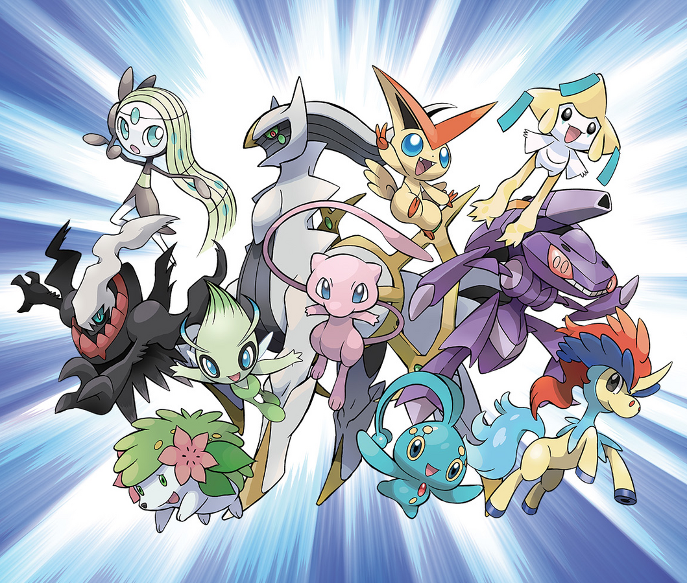
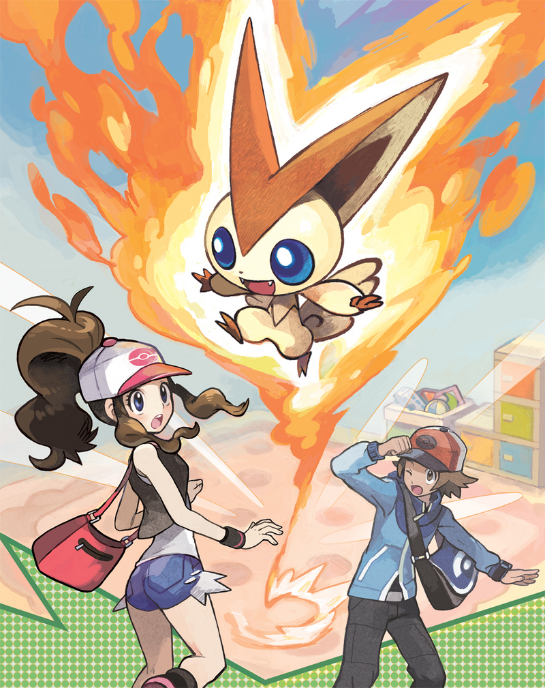
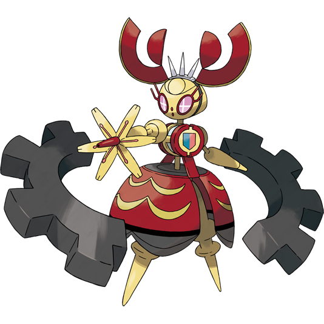
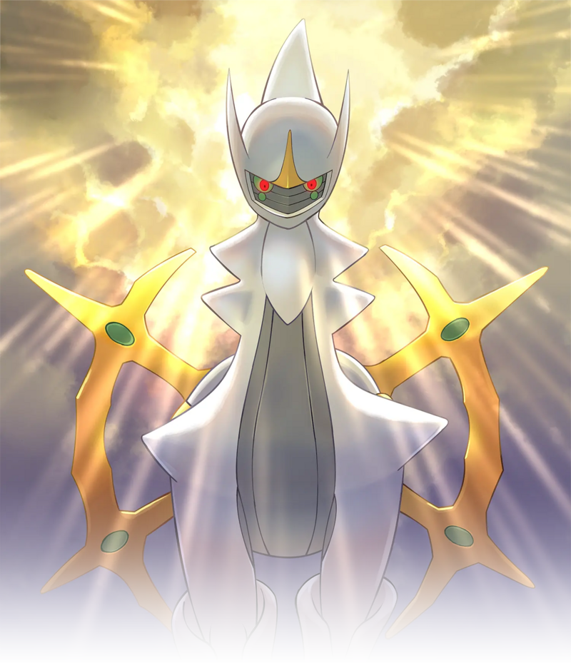
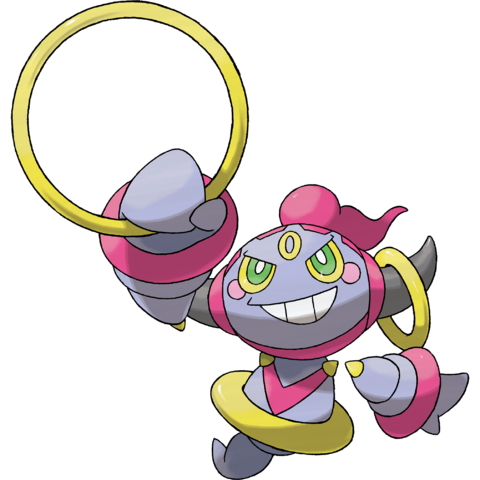
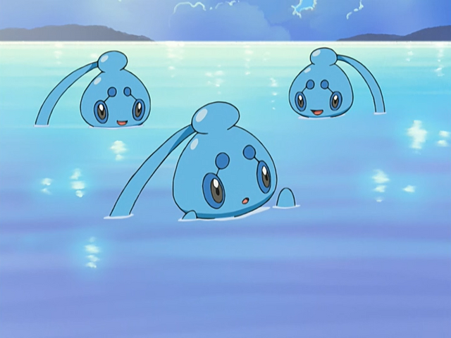
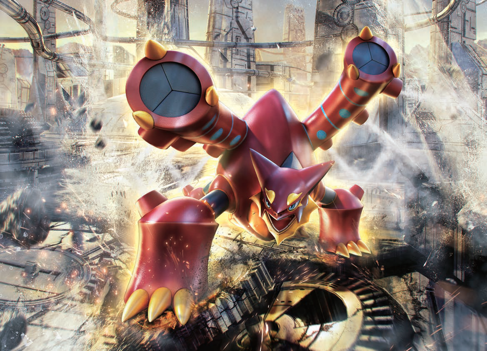
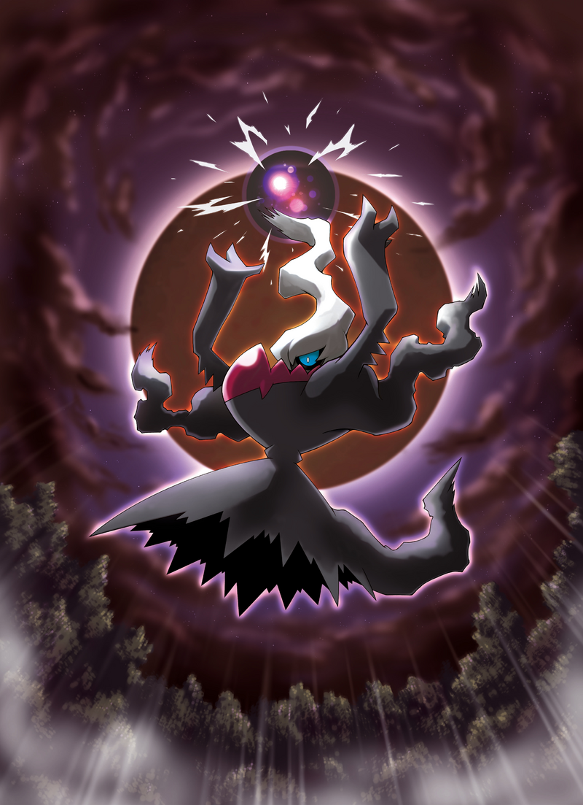
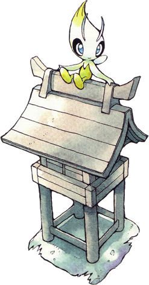
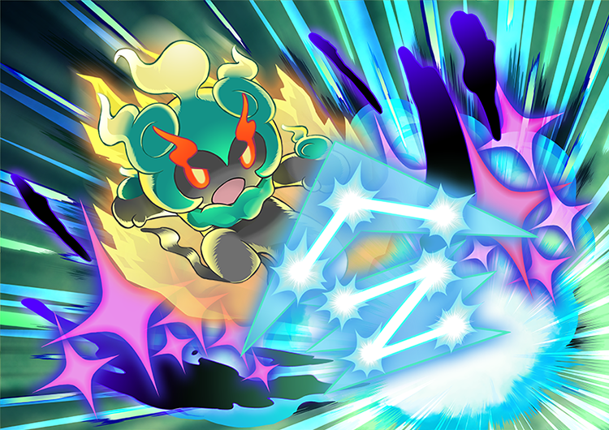

“Mythical” is a special classification that consists of Pokemon mainly obtainable ONLY through special in-person events. They have high base stat totals, usually around 600 points, making them powerful allies, or difficult adversaries.
Mythical Pokemon draw from a wide variety of inspirations while they all carry an aura of uniqueness and rarity around them, like they’re something you wouldn’t normally see on your Pokemon journey. They also usually get special music to accompany their encounters, whether it’s unique to them or the legendary encounter music from their generation.
As of Generation 9, there are currently 23 Mythical Pokemon. For comparison there are currently 71 Legendary Pokemon, more than triple the amount!
Due to their unorthodox methods of capture, Mythicals are banned from VGC, the official competitive format for Pokemon battles. While it is unfortunate that these unique Pokemon cannot be used, this means VGC will be spared from the soon-to-be released Mega Magearna’s wrath.


Arceus holds the record for the base Pokemon with the highest base stat total, coming in at 720 split evenly between its 6 stats.
The Psychic-Ghost typing is currently only carried by 4 Pokemon. 3 of these Pokemon are Legendaries, while the fourth is Hoopa, giving this type combination a lot of prestige. Hoopa is also, objectively, the second best Mythical Pokemon.


Manaphy is the only Mythical that can breed, and its eggs only hatch Phione. Likewise, Meltan is the only Mythical that can evolve, and it evolves into Melmetal.
Volcanion is the only Pokemon with the Fire-Water typing. Yet somehow, it remains as one of the least iconic or popular Mythical Pokemon.



Due to the strenuous methods of obtaining them and their limited time availability, Mythical Pokemon rarely get the chance to be used by the average trainer.
You could argue that this was the point of their design, as they’re Mythical, and shouldn’t be easily obtained. But by locking them away behind in-person events and under a time limit, their rarity feels artificially earned. Some Pokemon can create incredibly memorable moments when encountered in-game, as proven by some Legendaries and even some of the later Mythical Pokemon.
GameFreak, the developers of the Pokemon games, have been improving however! Deoxys was catchable in the Hoenn remakes, the Generation 4 Mythicals could all be caught in Pokemon Legends Arceus, and Pecharunt, the newest to the group, had its own extra in-game event that you can catch it in. Here’s hoping that these wonderful designs won’t be locked away behind time-sensitive gates, and can enjoyed by many more fans around the world!

And just for the record
Marshadow is the best Mythical. Objectively of course.
